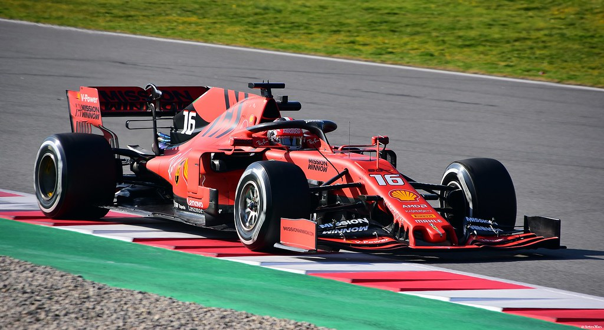
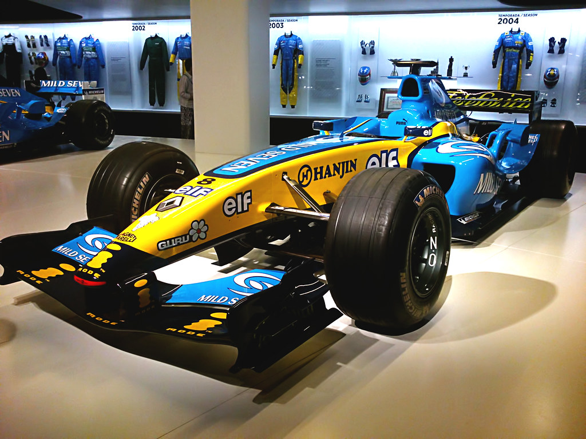

The wait for the 2020 season to get underway has been extended by another week with the news that the Azerbaijan Grand Prix has now been postponed
Following all of the other cancellations and postponements, Baku was set to host the first race of a truncated 2020 season on 7 June, but that will no longer be the case of yup, you guessed it, the coronavirus pandemic.
Unlike the straight cancellations of Australia and Monaco, Azerbaijan joins Bahrain, Vietnam, China, Netherlands, and Spain in being merely postponed, with the hope if being slotted into a revised calendar later in the season if possible. This leaves Canada on 14 June as the new season-opening race. If the season can start then, the Circuit Gilles Villeneuve will surely make for a fine location to kick off a Formula 1 season.
It’s a big if, though, because the Canadian GP will surely also have a question mark over its head - Canada has withdrawn from this year’s Tokyo Olympics, which are set to begin in July. If they’re pulling out of an event as significant as that, it’s probably safe to assume they’re not going to have too much difficulty in making the decision to call off the grand prix, too.Read More...
F1 Summer Break to Take Place in August

The FIA has extended the summer shutdown period by seven days and moved it to now in order to allow for more flexibility due to the coronavirus pandemic
F1’s traditional August summer break isn’t just a chance for us to have a bit of a breather for a few weeks - it also features a mandatory 14-day factory shutdown period so that all of the team employees can have a rest.
However, with races being postponed and F1 looking to reschedule them, the summer break could be a bit of a problem: why have the summer shutdown then, when it could be happening at the moment when nothing’s happening in the sport anyway?
That’s exactly what the FIA has decided to do. At any point between now and the end of April, teams have to take an extended 21-day shutdown - a decision which went through via unanimous vote by the F1 Commission and F1 Strategy Group.
It’s unlikely to be the most popular decision with team staff, who may already have made plans for August and are instead being forced to take their mandatory holiday at a time when much of the world is on lockdown.
The upside for the sport is that this will effectively free up the weekends in the summer break to reschedule any postponed races. Hopefully, when things go get underway again, it’ll be with a good number of races. But if it is, one thing’s for sure - the period from May to December is going to be seriously hectic… Link to original article...